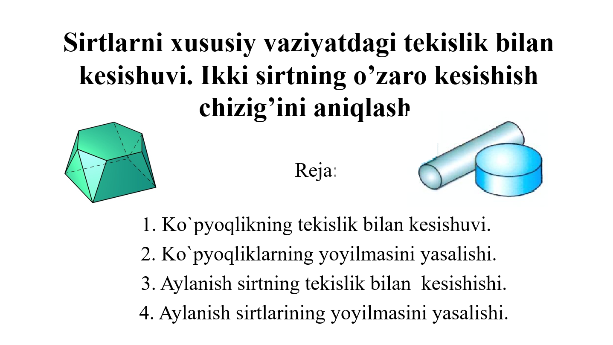
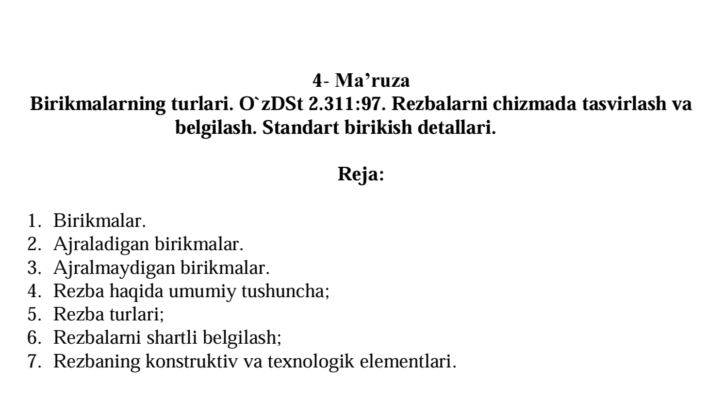
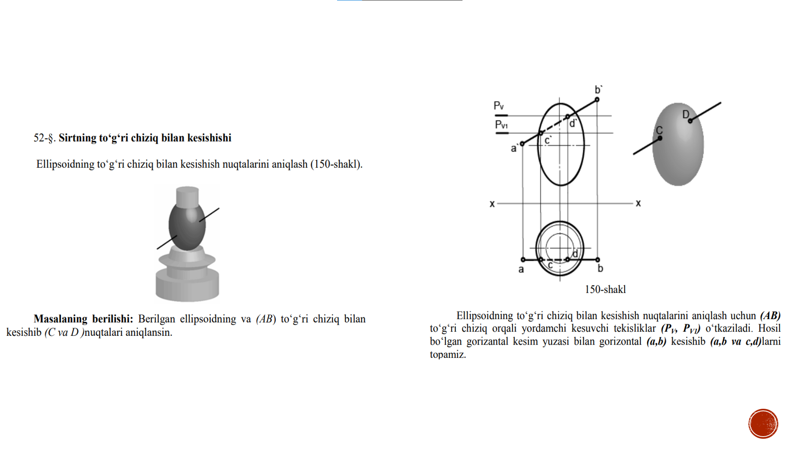

Sirtlarni xususiy vaziyatdagi tekislik bilan kesishuvi. Ikki sirtning o’zaro kesishish chizig’ini aniqlash.
Yuklab olish

Birikmalarning turlari. O`zDSt 2.311:97. Rezbalarni chizmada tasvirlash va belgilash. Standart birikish detallari.
Yuklab olish

Yordamchi kesuvchi tekisliklar usuli
Yuklab olishDadaboyeva Dilnoza - Muhandislik Grafikasi - TATU